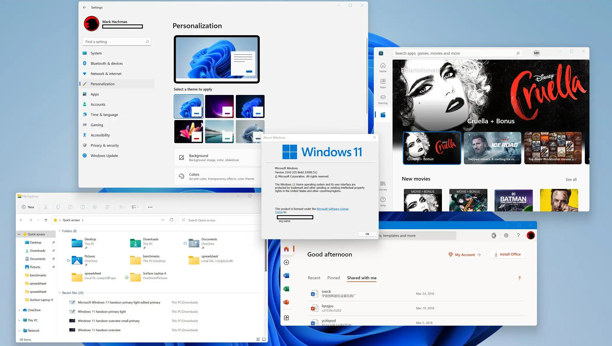
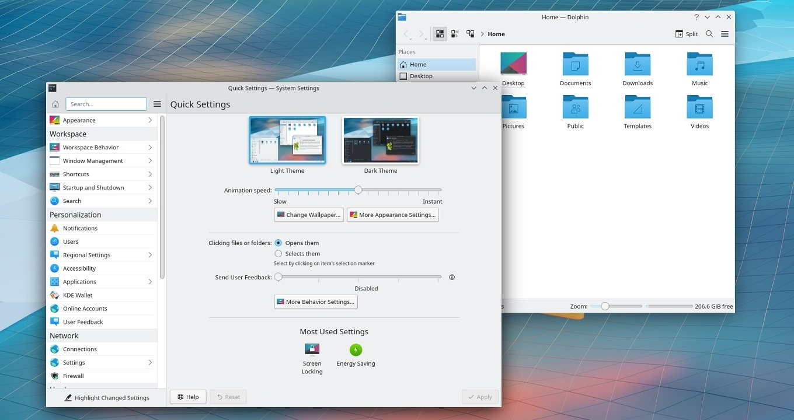
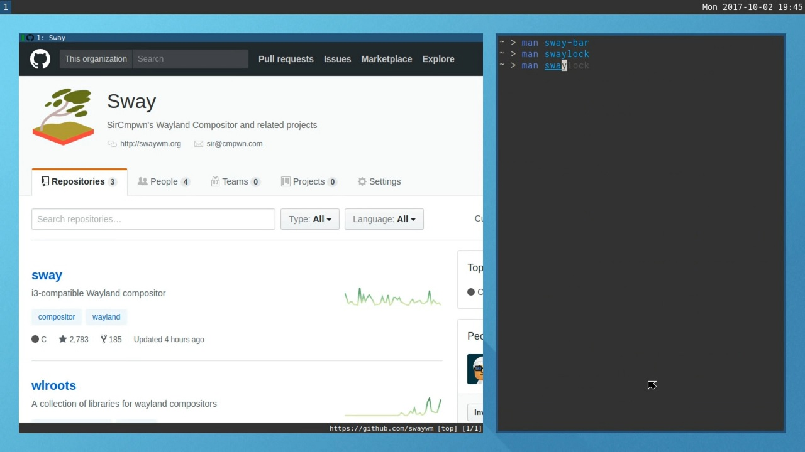
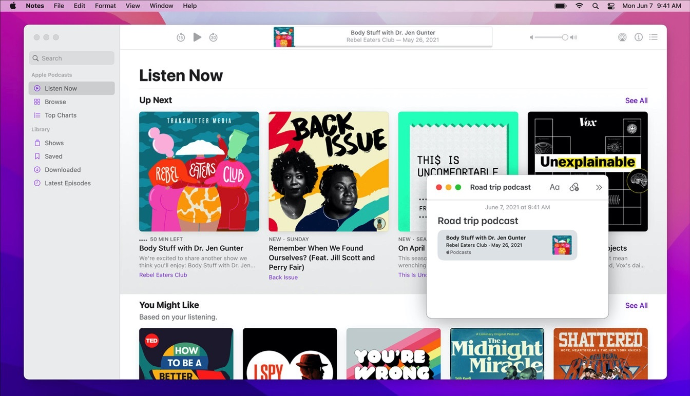
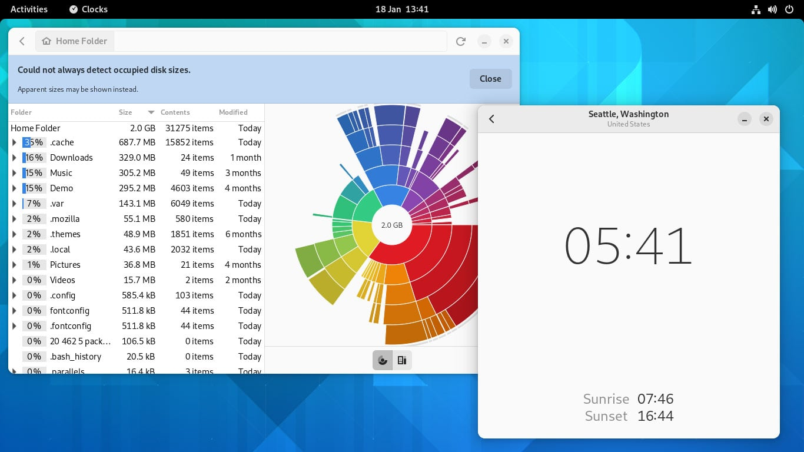
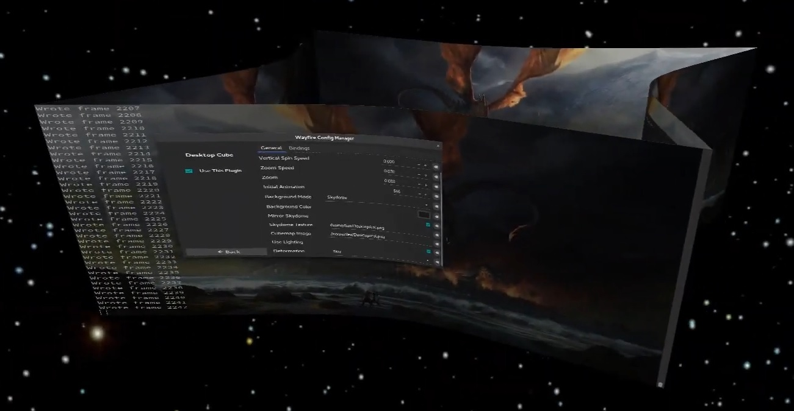
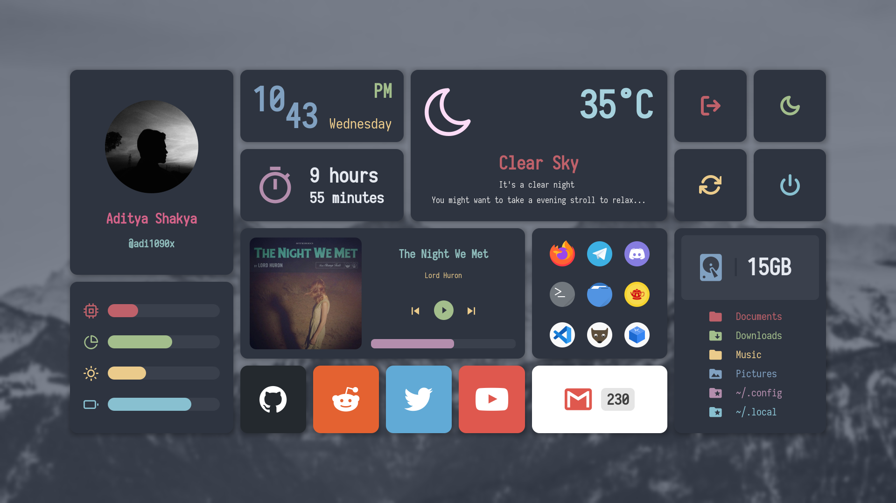

Window Manager

Microsoft Windows's stacking window manager
{kind=link}
- Rounded corners
- Title bar with actions (e.g. minimize, maximize, close) on the top right of the window

KDE Plasma's stacking window manager, KWin, with default settings
{kind=link}
- Sharp corners
- Title bar with actions on the top right of window

A tiling window manager called Sway with default settings
{kind=link}
- Sharp corners
- No window decorations (e.g. title bar, window actions)
- No overlapping windows

macOS's stacking window manager
{kind=link}
- Rounded corners
- Window actions on top left of window, additional options on menu bar
- Program title on menu bar

Gnome's stacking window manager, Mutter.
{kind=link}
- Rounded corners
- Window actions on top right of window
- Program title on menu bar

A stacking window manager called Wayfire.
{kind=link}
- Sharp corners
- Title bar with actions of top right of window
- 3D effects for windows and workspaces
Application Launcher / Dashboard
{kind=link}
{kind=link}

Custom Dashboard/App Launcher
{kind=link}
- Small grid of specific application icons
- Boxes with information/settings and shortcuts
Taskbar / Dock
{kind=link}
 Gnome's Dock
Gnome's Dock
- Transparent bar with rounded corners and icons of applications
Custom Vertical Dock/Taskbar (image rotated)
{kind=link}
- Opaque bar containing sections/boxes with rounded corners
- Includes icons of applications and additional system options/information